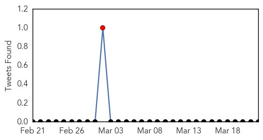
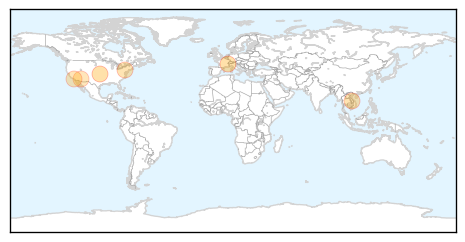
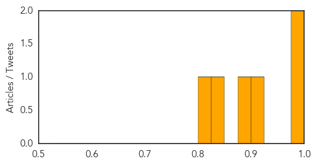

Pertussis
30-Day Web Trend
0 alerts, 0 warnings

30-Day Twitter Trend
1 alerts, 0 warnings

Article Locations

Article Confidences

Top Articles:
Top Tweets:
-
No tweets found for Mar 22, 2015
Measles
30-Day Web Trend
0 alerts, 0 warnings

30-Day Twitter Trend
3 alerts, 0 warnings

Article Locations
Article Confidences
Top Articles:
- 0.999
- WHO urges mass vaccination vs measles in Ebola areas
- 0.998
- WHO urges mass vaccination against measles, other diseases in Ebola areas
- 0.903
- Taiwan flight attendant is country’s 2nd rubella case; contact tracing ongoing
- 0.890
- Hospital superbug kills more people than measles; yet there's little outcry against doctors abusing antibiotics
- 0.841
- Dana Hills High School
- 0.807
- Measles PSA urges vaccines - azfamily.com 3TV
Top Tweets:
-
No tweets found for Mar 22, 2015